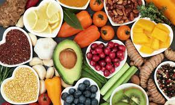

Let food be thy medicine, thy medicine shall be thy food
-Hippocrates
About
|  | Food Habits
|
Categories
Survey
Over half of all Indians, especially women, eat an unbalanced diet devoid of fresh fruits, green vegetables, pulses, meat and milk products that are needed to lead a healthy life. The recently released National Family Health Survey (NFHS-4) 2015-16 by the health ministry revealed that fewer than half (47%) of all women consume dark green, leafy vegetables daily and another 38% eat them only once a week.
A well-balanced diet is one that contains enough proteins, fats, carbohydrates, vitamins and minerals.The NFHS-4 showed that only half (45%) of women eat pulses or beans daily and an equal percentage consume them weekly. Milk or curd is consumed daily by 45% of women and weekly by 23%. Seven percent never have either milk or curd and 25% consume these dairy products only occasionally. Read More..